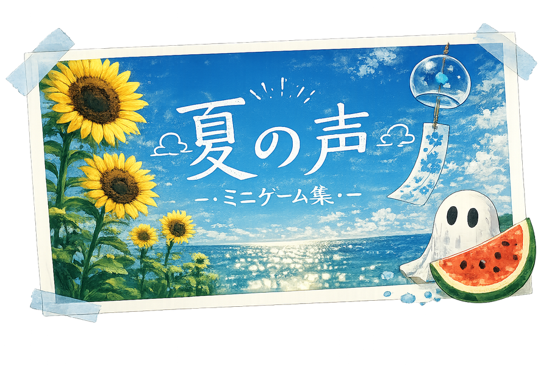
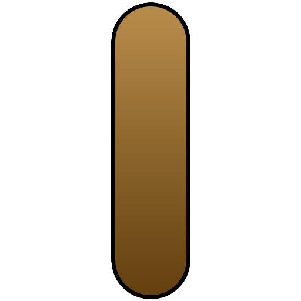

スマホと PC の2台で遊びます。まずこの端末の役割を選んでください。同じ画面を開いたもう一方の端末で、もう片方の役割を選びます。
このコードを観測者側の端末に入力してもらってください。
プレイヤー側の端末に表示されている4桁のコードを入力してください。

プレイヤー側の準備が終わるのを待っています。目隠しをつけてもらいましょう。
準備ができました。
遊びたいゲームを選んでください。

パーフェクトスプリット！
まん丸に、綺麗な一撃でした。
ゆうれいハンター！
見事な腕前でした。